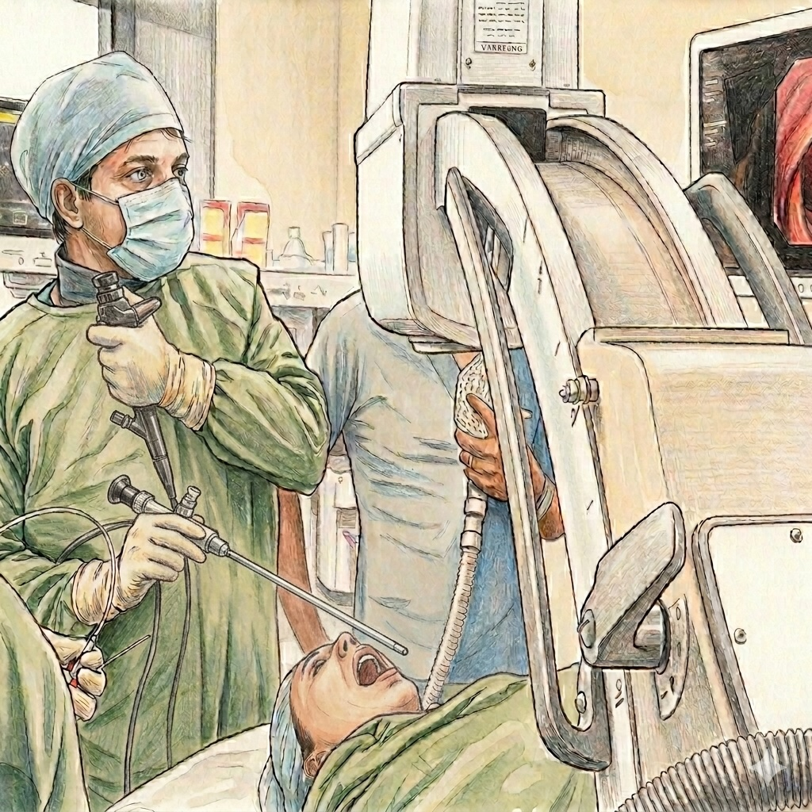
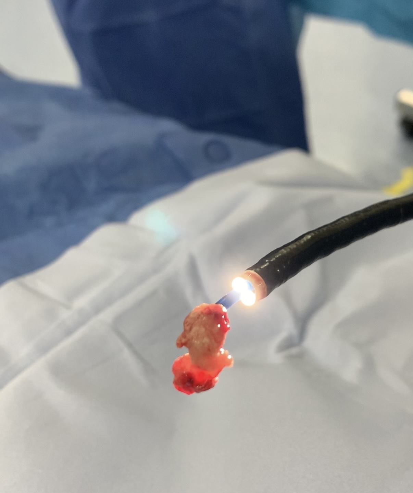
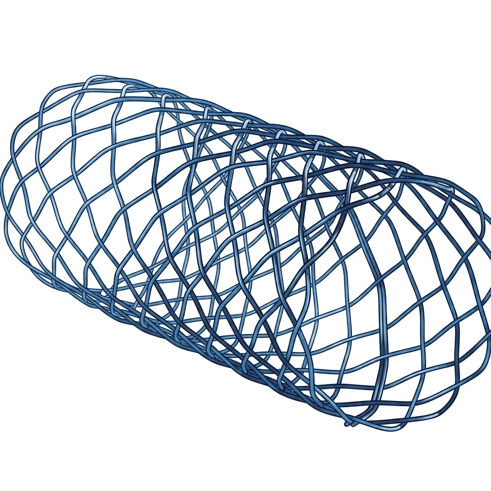
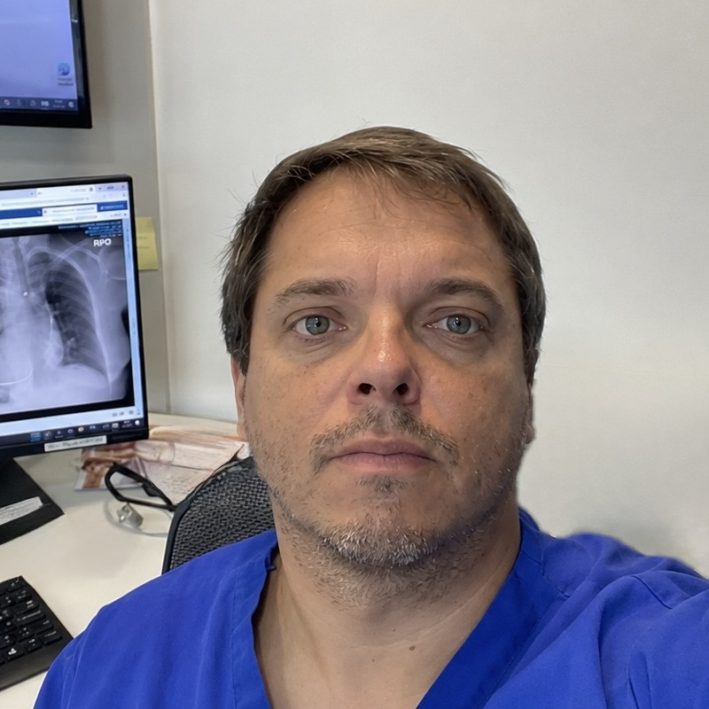

Área terapéutica avanzada · Dr. David Lazo Pérez
Broncoscopía Intervencional
de la Vía Aérea
El manejo de la obstrucción de la vía aérea (OVA) —maligna o benigna— dispone hoy de un arsenal terapéutico completo. La elección depende del tipo y localización de la lesión, el grado de obstrucción y la experiencia del operador. Ninguna técnica es universalmente superior: la combinación define el resultado.
1 Área de vía aérea
Broncoscopía Rígida
A pesar del avance de la broncoscopía flexible, el broncoscopio rígido sigue siendo el instrumento de elección para la terapéutica de la vía aérea. Ambos son complementarios: el flexible no reemplaza al rígido, sino que lo acompaña.

Ventajas del broncoscopio rígido
Gran calibre para instrumentalización
Permite introducir múltiples instrumentos simultáneamente — láser, pinzas, criosonda — sin sacrificar visión ni ventilación.
Control total de la vía aérea
Ventilación jet estable. Aislamiento de vía aérea derecha o izquierda. Mínima obstrucción funcional durante el procedimiento.
Hemostasia y succión directa
Gran capacidad de succión. Manipulación directa de la lesión. Control de hemoptisis masiva e intraoperatoria.
Despliegue de stents
Plataforma estándar para instalar stents de silicona y autoexpandibles en estenosis malignas y benignas.
Indicaciones principales
Biopsia de tejido de gran calibre
Muestras histológicas completas en lesiones endobronquiales voluminosas.
Remoción de cuerpos extraños complejos
Extracción con fórceps rígidos, canastillo o resección mecánica directa.
Hemoptisis masiva
Control inmediato del sangrado, taponamiento y coagulación endobronquial.
Obstrucción de vía aérea central
Resección mecánica (coring), dilatación directa del lumen y despliegue de stents en OVA intrínseca o extrínseca.
Técnicas accesorias (manejo indirecto OVA)
Electrocauterio
Coagulación y resección
Crioterapia
Ablación y criobiopsia
Láser
Vaporización tisular
Argón Plasma
Coagulación sin contacto
Balones / bujías
Dilatación de estenosis
Stents
Silicona y autoexpandibles
Microdebridador
Resección mecánica
Terapia fotodinámica
Lesiones superficiales
2 Terapia endobronquial
Técnicas de Ablación Endobronquial
Las técnicas de ablación térmica permiten destruir, coagular o vaporizar tejido endobronquial obstructivo. Se utilizan individualmente o combinadas, con frecuencia bajo broncoscopía rígida para mayor control de la vía aérea.
Descripción y técnica
Aplica corriente eléctrica de alta frecuencia al tejido endobronquial para coagularlo, cortarlo o vaporizarlo. Disponible en sonda (probe), cuchillo (knife) y asa (snare). La energía promedio utilizada es 30 W. En el 62% de los procedimientos se usa con broncoscopía rígida. Frecuentemente acompañado de dilatación con balón (25%), excisión de tejido (60%) y stenting (31%).
Indicaciones
Principio y técnica
El APC aplica una descarga de gas argón ionizado —convertido en plasma— a través de un electrodo, sin contacto directo con el tejido. El argón inerte se convierte en gas ionizado (plasma) a través del electrodo contenido dentro de la sonda. Esto limita automáticamente la profundidad de penetración, haciéndolo intrínsecamente más seguro que el láser en vías aéreas de pared delgada. Principal uso: hemostasia, desvitalización y destrucción de tejidos.
Indicaciones
Descripción y técnica
El Nd:YAG (1064 nm) combina fotocoagulación y vaporización con penetración profunda (hasta 15 mm), aplicado a través de fibra óptica flexible. Standardizado mundialmente por Lucien Dumon. Contraindicado en lesiones puramente extrínsecas o sin lumen distal visible. Las lesiones más amenables son centrales, intrínsecas, cortas (<4 cm) con lumen distal visible. Requiere reducción de FiO₂ <40% para evitar ignición endobronquial.
Indicaciones (Hoag/Ernst, 2012)
3 Técnica de ablación en frío
Crioterapia
Introducida en 1968, la crioterapia genera muerte celular y necrosis tisular mediante ciclos de congelamiento-descongelamiento rápidos. Su versatilidad — diagnóstica y terapéutica — junto con su bajo costo comparativo la hacen especialmente relevante para la realidad de LATAM.
Principio de acción · Efecto Joule-Thompson
El CO₂ a alta presión es hecho pasar a través de un orificio pequeño, aumentando dramáticamente su volumen, lo que resulta en el enfriamiento rápido de la sonda. Esto induce muerte celular por cristales de hielo intracelulares, deshidratación osmótica, daño vascular y apoptosis tardía.
✅ Ventajas frente a técnicas "calientes"
- No requiere reducir FiO₂ — sin riesgo de ignición endobronquial
- El cartílago es criorresistente → menor riesgo de fístulas
- Puede realizarse con broncoscopio flexible en la mayoría de casos
- Bajo costo comparativo respecto a láser o APC
- Múltiples usos (diagnóstico + terapéutico) con el mismo equipo

Lesiones Pulmonares Periféricas
- Criobiopsia transbronquial guiada por EBUS radial (TBCB)
- TBCB vs fórceps: 77.4% vs 59.4% rendimiento diagnóstico (p<0.01)
- Mayor rendimiento en lesiones ≥30 mm y orientación hacia el centro
- Sonda de 1.9 mm: 76.8% vs 78.4% sonda 1.1 mm (no significativo)
Lesiones Mediastínicas
- Complemento del CryoEBUS para biopsia ganglionar
- Muestras histológicas de mayor tamaño vs aguja convencional
- Indicado en linfomas, sarcoidosis y tumores mediastínicos
Recanalización Central
- Criorecanalización de obstrucciones neoplásicas de vía aérea central
- Puede realizarse con broncoscopio flexible o rígido
- Mejor perfil de seguridad que métodos calientes
- Remoción de coágulos y tapones mucosos (cryoadhesion)
Crioablación
- Destrucción de tejido endobronquial maligno de bajo grado
- Múltiples sesiones (2–4 semanas entre cada una)
- Sinergia con radioterapia (quimiosensibilización criogénica)
- Remoción de cuerpos extraños por crioadhesión
Evidencia en OVA maligna — Series publicadas (resumen)
DiBardino et al. Ann Am Thorac Soc. 2016;13(8):1405–15.| Estudio (año) | N | Modalidad | Resultado principal | Seguridad |
|---|---|---|---|---|
| Mathur et al. (1996) | 20 | Flexible | 90% remoción completa tumor; 71% mejora disnea; 100% mejora hemoptisis | Sin complicaciones mayores |
| Marasso et al. (1993) | 234 | Rígida | 94% mejora hemoptisis; 81% mejora disnea; 68% mejora atelectasia | No reportado |
| Maiwand et al. (2004) | 476 | Rígida | 76% mejora hemoptisis; FEV1 +90 ml; FVC +130 ml | 0.7% sangrado; 0.1% neumotórax |
| Hetzel et al. (2004) | 60 | Flexible | 83% resolución completa o parcial (37/60 completa) | 10% sangrado → APC |
| Schumann et al. (2010) | 225 | Flexible/Rígida | 91% mejoría o capacidad de clearance de secreciones | 12% sangrado leve-moderado |
| Inaty et al. (2016) | 88 | Rígida | 94% resolución completa o parcial tras 1er procedimiento | 6/156 sangrado moderado |
| Chen et al. · TBCB periférica (2022) | 133 | Flexible (EBUS radial) | 77.4% rendimiento diagnóstico (vs 59.4% fórceps, p<0.01) | Sin complicaciones mayores reportadas |
4 Soporte traqueobronquial
Stents Traqueobronquiales
Los stents traqueobronquiales son prótesis intraluminales destinadas a mantener la permeabilidad de la vía aérea central frente a obstrucciones malignas, benignas o fístulas. Al ser cuerpos extraños implantados, exigen seguimiento broncoscópico indefinido.

Hitos históricos
Comparación: Silicona vs Metálico (Nitinol recubierto)
⚠️ Los stents metálicos descubiertos están contraindicados en patología benigna por dificultad de extracción y mayor tasa de complicaciones tardías.
Indicaciones (Cuadro 2 — Pinedo-Onofre, 2009)
Indicaciones oncológicas
Indicaciones no oncológicas
Contraindicaciones absolutas
Paciente inestable hemodinámicamente · Alergia al material del stent · Parénquima pulmonar no viable distal al sitio de obstrucción
Complicaciones por período (Cuadro 3 — Pinedo-Onofre, 2009)

Especialista
Dr. David Lazo Pérez
Cirujano Torácico · Broncoscopía Intervencional
Médico-cirujano de la Pontificia Universidad Católica de Chile, con especialización en Cirugía Torácica por la Universidad de Chile y formación en Trasplante Pulmonar en el Hospital Universitario Puerta de Hierro Majadahonda, España.
Con 19 años de experiencia, es el cirujano con mayor experiencia en EBUS en Chile (desde 2010, +3.200 procedimientos) y pionero en la técnica CryoEBUS a nivel latinoamericano. Regente para Chile de la Asociación Mundial de Broncología y Neumología Intervencionista (WABIP).
Primer paso
Hable directamente
con el especialista

Dr. David Lazo Pérez
Cirujano Torácico